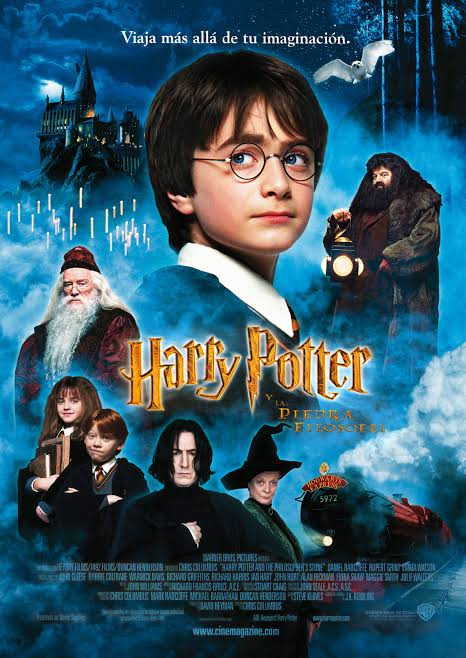
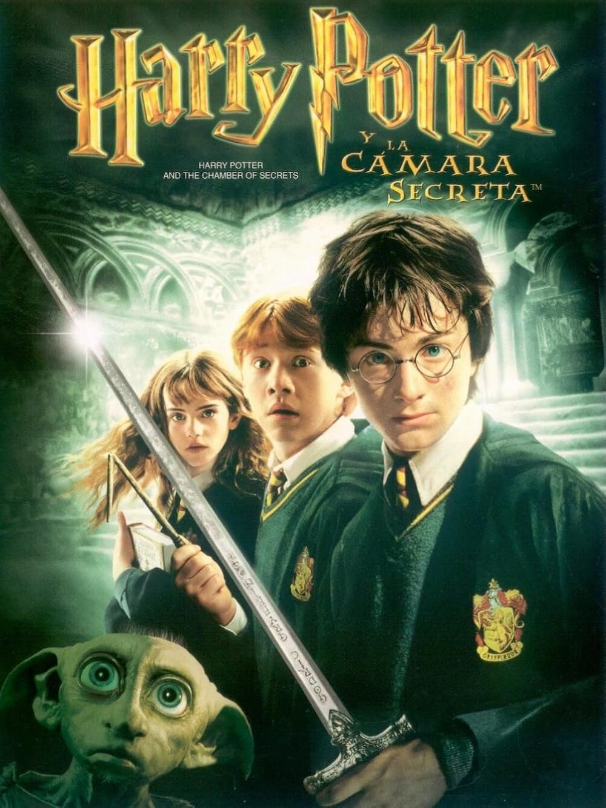
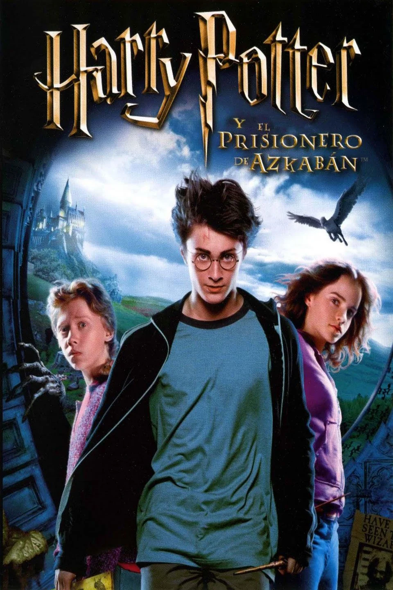
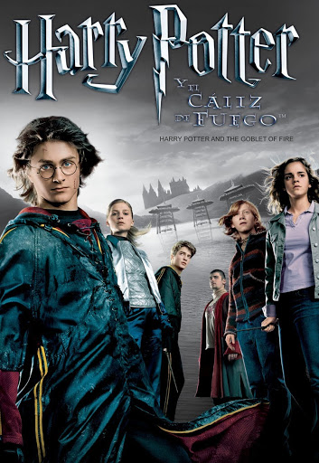
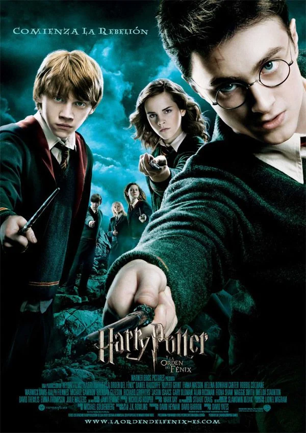
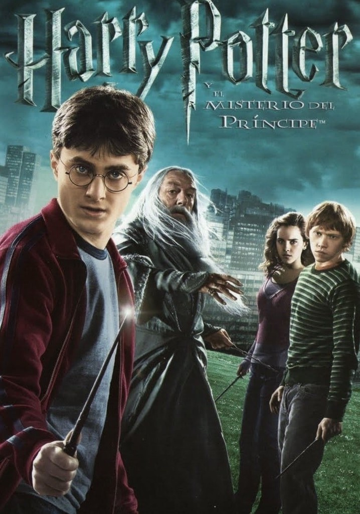
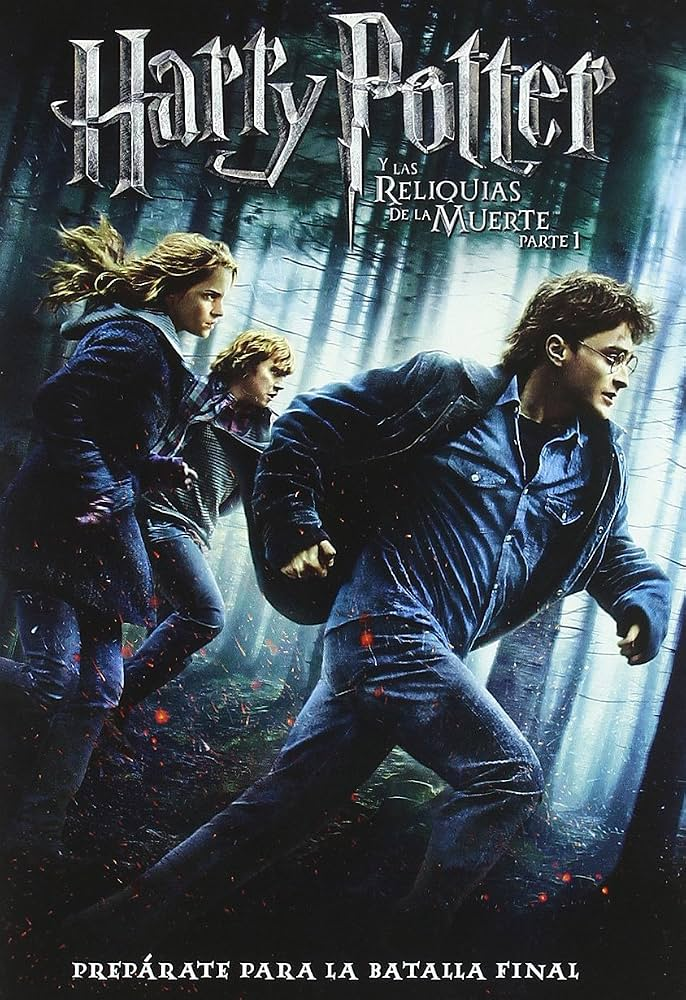
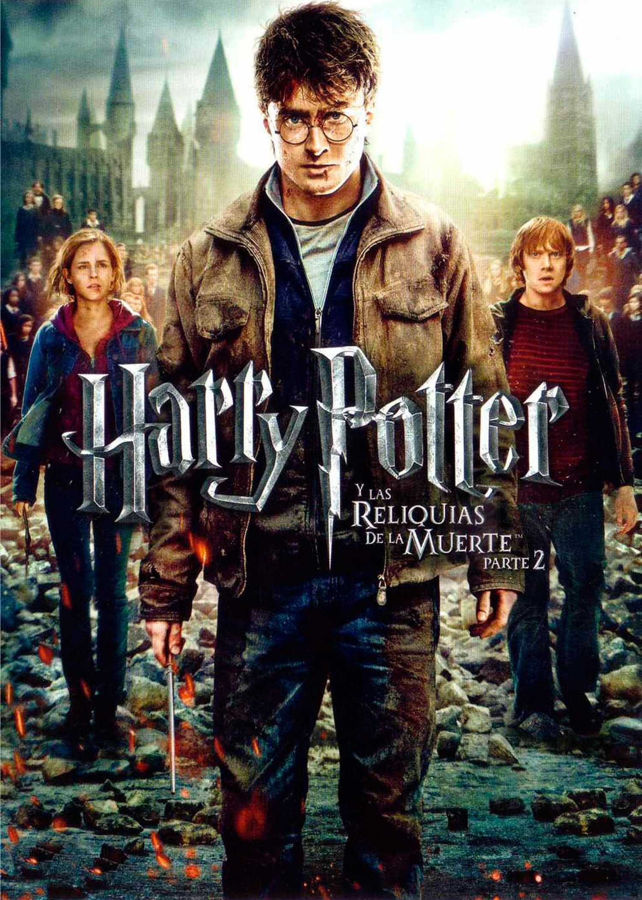

Harry Potter y La Piedra Filosofal
2001 ‧ Infantil/Fantasía
Durante su primer año en la escuela de magia y hechicería de Hogwarts, Harry Potter descubre que un malévolo y poderoso mago llamado Voldemort está en busca de una piedra filosofal que alarga la vida de quien la posee.

Harry Potter y la camara de secretos
2002 • Infantil y Fantasía
Terminado el verano, Harry no ve la hora de abandonar la casa de sus odiosos tíos. Inesperadamente, se presenta en su dormitorio Dobby, un elfo doméstico, que le anuncia que correrá un gran peligro si vuelve a Hogwarts.

Harry Potter y el prisionero de azkaban
2004 • Comedia y fantasía
El tercer año de estudios de Harry en Hogwarts se ve amenazado por la fuga de Sirius Black de la prisión de Azkaban. Al parecer, se trata de un peligroso mago que fue cómplice de Lord Voldemort y que intenta vengarse de Harry Potter.

Harry Potter Y El Caliz de Fuego
2005 ‧ Infantil/Fantasía
Hogwarts se prepara para el Torneo de los Tres Magos, en el que competirán tres escuelas de hechicería. Para sorpresa de todos, Harry Potter es elegido para participar en la competencia, en la que deberá luchar contra dragones, internarse en el agua y enfrentarse a sus mayores miedos.

Harry Potter y La Orden de Felix
2007 ‧ Infantil/Fantasía
Una nueva profesora impide que los estudiantes de Hogwarts se preparen de forma adecuada para enfrentarse contra Voldemort. Por lo tanto, Harry resuelve enseñarles a luchar contra las artes oscuras, pese a la oposición de la nueva directora.

Harry Potter y El Pricipe Meztizo
2009 ‧ Infantil/Fantasía
Harry descubre un poderoso libro y, mientras trata de descubrir sus orígenes, colabora con Dumbledore en la búsqueda de una serie de objetos mágicos que ayudarán en la destrucción de Lord Voldemort.

Harry Potter y Las reliqueas de la muerte parte 1
2010 ‧ Infantil/Fantasía
Harry, Ron y Hermione se marchan de Hogwarts para iniciar su misión más importante: tienen que destruir los horrocruxes, el secreto del poder y la inmortalidad de Voldemort, en los que el temido mago oscuro guarda los fragmentos de su alma.

Harry Potter y Las reliqueas de la muerte parte 2
2010 ‧ Infantil/Fantasía
La batalla entre las fuerzas del bien y del mal del mundo mágico se convierte en una guerra a la que ya nadie es ajeno. Harry Potter tendrá que hacer un último sacrificio para destruir al malvado Voldemort.